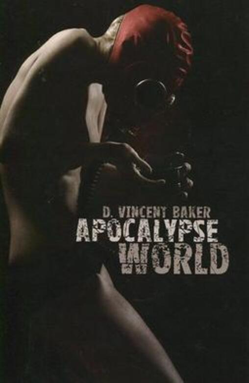
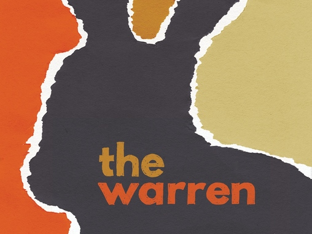
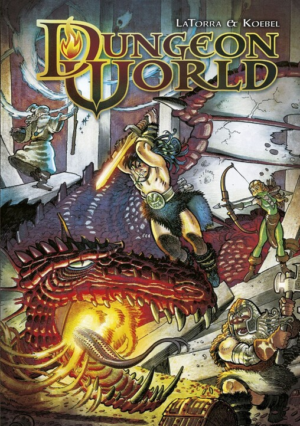
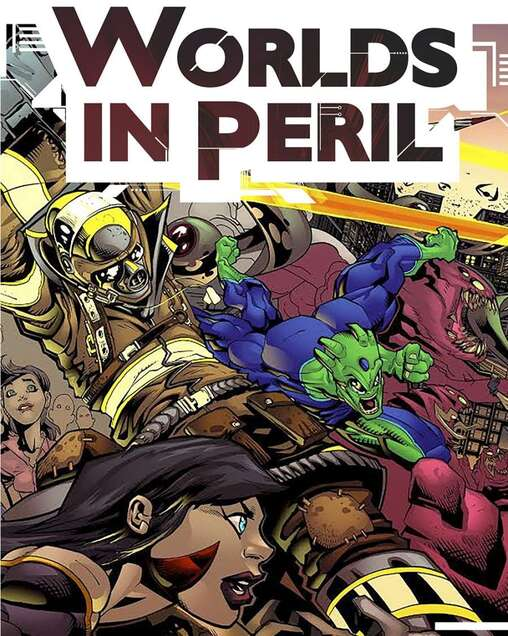

Powered by the Apocalypse
Powered by the Apocalypse fue creado por Meguey y D. Vincent Baker el año 2010 para su juego “Apocalypse World”. En este sistema, la acción se centra en las acciones de los personajes a través de algunos movimientos que vienen descritos en cada juego dependiendo del objetivo, Apocalypse World, por ejemplo, al ser un juego que en gran parte se centra en batallas, sus movimientos tienen tintes de lucha.
El sistema es bastante simple, se utilizan 2 dados de 6 caras (2d6) a los que se les suman o restan distintos modificadores determinados tanto por la dificultad del movimiento (si voy a disparar una flecha a 20mts, la tirada tendrá penalizaciones que, tal vez, no tendría si fuera a disparar a 2mts de distancia) como por las habilidades del personaje (si mi personaje es un arquero, la tirada tendrá menos dificultad que si mi personaje pelea con espadas y va a usar arco y flecha). Los éxitos son las tiradas en las que se consigue 10+ entre la tirada de ambos dados y modificadores, de 7 a 9, se cumple, pero no del todo y 6- implica un fallo, que puede también traer una penalización para el jugador.
Apocalypse World
Como mencioné anteriormente, el juego fue lanzado el 2010. Ambientado en un mundo post-apocalíptico, Apocalypse World es un juego cuyo punto de partida son el Narrador y su capacidad de improvisar. Al comenzar cada partida, los jugadores y el MC (aka. Narrador) comienzan a planificar la historia, lo que pasó en el planeta que lo lleva al punto en el que se encuentra, basándose en los elementos que entrega el manual de juego. La historia y relaciones de los personajes se determina también durante la etapa de planificación, al momento de crear los personajes.
“Nadie recuerda el cómo o el por qué. Tal vez nunca nadie lo supo. Los sobrevivientes más ancianos solamente tienen recuerdos de su infancia sobre ciudades quemándose, sociedades caóticas que luego colapsaron, familias que escaparon en pánico, las extrañas noches cuando el cielo se convirtió de pronto en un cielo rojo sangre de mitad de día.
Ahora el mundo no es lo que era. Mira a tu alrededor: evidentemente, ciertamente, no es lo que fue. Pero si cierras los ojos y abres el pensamiento te darás cuenta que algo está mal. En los límites de la percepción, algo esta gritando en agonía, lleno de odio y terror. Ninguno de nosotros tiene refugio de la confusión psíquica en la que está inmerso nuestro mundo.”
The Warren
wnseofjvepd
uieshnwiuehfso
Dungeon World
wnseofjvepd
uieshnwiuehfso
Worlds in Peril
wnseofjvepd
uieshnwiuehfso
